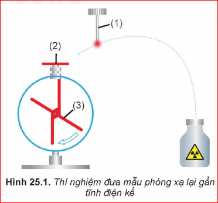
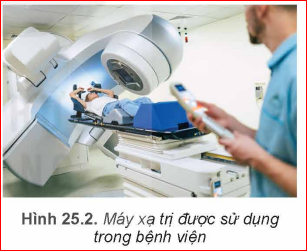

Chương IV – Vật lí hạt nhân và phóng xạ
Phần vật lí hạt nhân bao gồm bốn nội dung chính: cấu trúc hạt nhân, phản ứng hạt nhân, phóng xạ và ứng dụng công nghiệp hạt nhân.
Các bài tập này thường yêu cầu mô tả cấu tạo hạt nhân, đặc điểm của hạt nhân tham gia phản ứng hạt nhân, tính chất của các tia phóng xạ, giải thích các ứng dụng của vật lí hạt nhân trong đời sống và trong kĩ thuật.
Các bài tập này thường yêu cầu vận dụng công thức xác định số lượng và loại nucleon; khối lượng, số lượng hạt nhân hoặc thời gian thực hiện phóng xạ của mẫu phóng xạ.
Các bài tập này thường yêu cầu rèn luyện khả năng liên tưởng giữa kiến thức vật lí hạt nhân đã được học và các nội dung thực tiễn; đồng thời cũng yêu cầu trừu tượng hoá, khái quát hoá thực tiễn để thiết lập các mô hình sao cho có thể vận dụng nội dung các kiến thức vật lí hạt nhân để giải quyết vấn đề.
Câu 1:
Giải thích tại sao khi đưa mẫu phóng xạ (1) vào gần đầu thu điện (2) của một tĩnh điện kế đã được tích điện (Hình 25.1) thì độ lệch của kim điện kế (3) giảm rất nhanh?

Độ lệch kim điện kế giảm nhanh cho ta biết tĩnh điện kế nhận thêm điện tích trái dấu hoặc mất bớt điện tích. Như vậy có thể có hai trường hợp:
Kết luận: Không khí xung quanh tĩnh điện kế trở nên dẫn điện tốt hơn do bị ion hoá, làm điện tích nhanh chóng bị dẫn ra môi trường.
Câu 2:
Viết phương trình phân hạch của \( {}_{}^{235}U \) khi hấp thụ 1 neutron, biết rằng sản phẩm phân hạch gồm có \( {}_{58}^{140}Ce \), \( {}_{40}^{94}Zr \), các neutron và các tia \( \beta^- \).
Phương trình có dạng: \( {}_{92}^{235}U + {}_{0}^{1}n \rightarrow {}_{58}^{140}Ce + {}_{40}^{94}Zr + x{}_{0}^{1}n + y{}_{-1}^{0}e \)
Áp dụng định luật bảo toàn số khối (A) và điện tích (Z):
\( \begin{cases} 235 + 1 = 140 + 94 + x \cdot 1 + y \cdot 0 \\ 92 + 0 = 58 + 40 + x \cdot 0 + y \cdot (-1) \end{cases} \Rightarrow \begin{cases} x = 2 \\ y = 6 \end{cases} \)
Phương trình hoàn chỉnh: \( {}_{92}^{235}U + {}_{0}^{1}n \rightarrow {}_{58}^{140}Ce + {}_{40}^{94}Zr + 2{}_{0}^{1}n + 6{}_{-1}^{0}e \)
Câu 3:
Máy xạ trị thường sử dụng nguồn \( {}_{27}^{60}Co \) có chu kì bán rã 5,3 năm. Thiết bị phải bảo dưỡng khi độ phóng xạ giảm đi 7% và thay nguồn khi giảm 50%. Hãy lập lịch bảo dưỡng và thay thế.

Sử dụng công thức: \( H_t = H_0 \cdot 2^{-\frac{t}{T}} \)
1. Chu kì bảo dưỡng \( t_{bd} \) (giảm 7% nghĩa là còn 93%):
\( \frac{H_0 - H_t}{H_0} = 0,07 \Rightarrow 2^{-\frac{t_{bd}}{T}} = 0,93 \Rightarrow t_{bd} = T \log_2(\frac{1}{0,93}) \approx 0,1047 \times 5,3 \text{ năm} \approx 6,6 \text{ tháng} \).
2. Chu kì thay mới \( t_{tm} \) (giảm 50%):
\( H_t = 0,5 H_0 \Rightarrow t_{tm} = T = 5,3 \text{ năm} \).
Kết luận: Bảo dưỡng sau mỗi 6 tháng và thay thế sau mỗi 5,3 năm.
1. Lực nào đã làm thay đổi phương của hạt alpha khi được bắn vào lá vàng mỏng?
A. Lực hạt nhân đẩy.
B. Lực hạt nhân hút.
C. Lực đẩy tĩnh điện.
D. Lực hút tĩnh điện.
2. Cho bảng độ phóng xạ H theo thời gian t. Ước lượng chu kì bán rã.
| t (s) | 0 | 30 | 60 | 120 | 180 | 240 | 300 | 360 |
|---|---|---|---|---|---|---|---|---|
| H (Bq) | 151 | 85 | 55 | 31 | 22 | 15 | 11 | 9 |
Nhận xét: Sau t = 60s, H giảm từ 151 xuống 55 (gần 1/3). Sau t = 30s, H giảm từ 151 xuống 85 (gần một nửa).
Chính xác hơn: Tại t = 38-40s, H sẽ bằng 75,5.
Ước lượng: T ≈ 40 giây.
3. Xác định tuổi mẫu gỗ cổ vật...
Dữ kiện: 240 phân rã/phút, 25g gỗ, tỉ lệ \( 10^{12}:1 \), \( T = 5730 \) năm.
a) Số nguyên tử C14: Tính tổng số nguyên tử C trong 25g (\( N = \frac{m}{M} N_A \)), sau đó chia cho tỉ lệ \( 10^{12} \).
b) Tuổi gỗ: Sử dụng \( H = H_0 2^{-t/T} \). Với \( H_0 \) là độ phóng xạ lúc mới chết (từ tỉ lệ chuẩn).
Bài 5: Chiếu xạ dược liệu (Hình 25.3)
Vào tháng 6/2024, xe tải chờ bao lâu? (Tháng 1/2022 chờ 150 phút, \( T=5,3 \) năm).
Thời gian chiếu xạ tỉ lệ nghịch với độ phóng xạ: \( \frac{t_2}{t_1} = \frac{H_1}{H_2} \).
Khoảng cách từ 1/2022 đến 6/2024 là 2,42 năm.
\( H_2 = H_1 \cdot 2^{-2,42/5,3} \approx 0,729 H_1 \).
\( t_2 = 150 / 0,729 \approx 206 \text{ phút} \).
Câu 1. Một hạt nhân có 6 proton và 8 neutron. Kí hiệu hạt nhân đó là:
Câu 2. Tia phóng xạ nào sau đây có khả năng đâm xuyên mạnh nhất?
Bài 1: Một mẫu chất phóng xạ có \( T = 10 \) ngày. Sau bao lâu thì lượng chất phóng xạ còn lại bằng 12,5% lượng ban đầu?
Bài 2: Tính năng lượng liên kết của hạt nhân \( {}_{2}^{4}He \). Biết \( m_p = 1,0073u, m_n = 1,0087u, m_{He} = 4,0015u \).